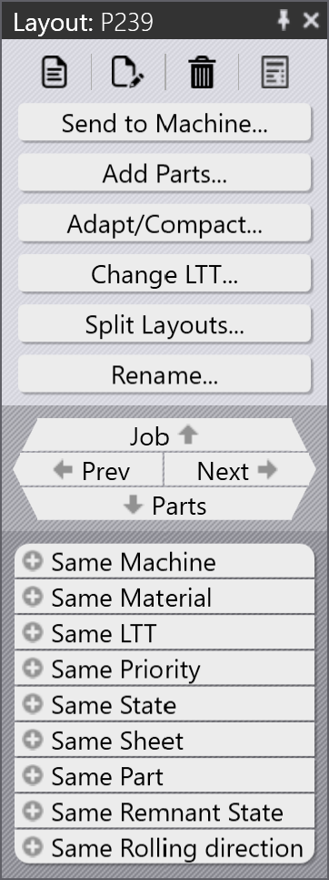

Yerleşim paneli
Bu bölüm, Makineye Gönder…, Makineden Geri Çağır…, Çıktıları Dışa Aktar, Tamamlandı Olarak İşaretle…, Parçalar Ekle…, Uyarla/Sıkıştır…, Yerleşim Düzenlerini Ayır… ve yerleşim örneklerini yönetmek için kullanılan diğer seçenekler gibi yerleşimle ilgili eylemleri açıklar.
 |
|


Makineye Gönder…
-
Bir yerleşim hazır olduğunda (dolu veya acilen gerekli), makineye gönderebilirsiniz.
-
Yerleşime sağ tıklayın ve Makineye Gönder… seçeneğini belirleyin.
-
Yerleşim adını taşıyan bir klasör otomatik olarak oluşturulur.
-
Çıktı dosyaları (fxlyt, NC, rapor, csv) İŞ çıktı konumuna aktarılır.
-
Makineye gönder yerleşimleri mavi bir onay işareti ile gösterilir.

| Yayınlandıktan sonra, bu yerleşimler yeniden paketleme için tekrar denenmez. |
Makineden Geri Çağır…
-
Çıktının doğrulamaya veya güncellemeye ihtiyacı varsa (örneğin, daha fazla parça eklemek):
-
Dışa aktarılan yerleşime sağ tıklayın.
-
Makineden Geri Çağır… seçeneğini belirleyin.
-
-
Çıktı dosyaları ve klasör (fxlyt, NC, rapor, csv) silinir.
-
Yerleşim tekrar düzenlenebilir hale gelir.
-
Değişiklik yapabilir ve tekrar makineye gönderebilirsiniz.

Çıktıları Dışa Aktar
-
Makineye gönderilmiş herhangi bir yerleşime (yerleşim) sağ tıklayın ve Çıktıları Dışa Aktar seçeneğine tıklayın.

-
Çıktıları Dışa Aktar seçeneği, NC, Rapor ve Yerleşim dosyalarını ilgili makine çıktı klasörlerine aktarır.
-
Bu seçenek, yerleşim için geçerli birim ayarları ile NC dosyasını yeniden oluşturur.
| Çıktıları Dışa Aktar, Tamamlanan Yerleşimler ve yeniden paketleme için kuyrukta bekleyen Yerleşimler için kullanılamaz. |
Tamamlandı olarak işaretle
-
Yerleşim makinede işlendikten sonra, yerleşime sağ tıklayın ve Tamamlandı Olarak İşaretle… seçeneğini belirleyin.
-
Birden fazla yerleşim seçip aynı anda tamamlandı olarak işaretleyebilirsiniz.
-
Bir yerleşim tamamlandı olarak işaretlendiğinde:
-
Gri renkte gösterilir, listenin sonuna taşınır ve yeşil bir onay işareti ile gösterilir.
-
Yerleşim, aktif yerleşimler listesinden kaldırılır.
-
Parça ve iş durumları güncellenir ve işlenen miktarlar tamamlanmış duruma geçer.
-
O yerleşim için çıktı dosyaları, çift kullanımı önlemek için makine çıktı konumundan kaldırılır.

-
Parçalar Ekle…

-
Nispeten kötü paketlenmiş bir yerleşime daha fazla parça eklemek için bu seçeneği kullanın. Etkileşimli Yerleştirme gibi, bu da sihirbaz odaklı bir seçenektir ve aynı anda tek veya birden fazla yerleşimde kullanılabilir.
-
Bu seçenek kullanıldığında TruSmartCAM, ana çalışma alanına Yerleşim yeniden paketleme sihirbazını monte eder. Ctrl tuşunu basılı tutun ve yerleşim(ler)e paketlenecek bir veya daha fazla parça seçin ve Sonraki seçeneğine basın.

-
Seçili parçalar, düzenlenebilir bir miktar sütunu ile bir sonraki adımda görüntülenir. Gerekirse Update Qty alanında parça miktarlarını güncelleyin. Yerleştirmeye devam etmek için Sonraki seçeneğine tıklayın. Miktarların yalnızca artırılabileceğini, azaltılamayacağını unutmayın.

-
Tüm yerleşimler ayrı ayrı yerleştirilir ve yerleştirme sonuçları, yeni paketlenen parçalarla birlikte yerleştirilerek görüntülenir. Yerleşimi seçmek, mevcut tüm yerleşim parçalarını görüntüler. Yeniden paketleme sırasında yeni parça yerleştirilmezse sonuç otomatik olarak iptal edilir. Birden fazla kopyası olan bir yerleşim, yeniden paketlemeden sonra farklı desenlerle sonuçlanabilir.

Uyarla/Sıkıştır…
-
Bu sihirbaz tabanlı komut, orijinal makine arızalı olduğunda veya makine iş yükünün dengelenmesi gerektiğinde bir yerleşimi bir makineden diğerine uyarlamak için kullanılabilir.

-
Planlanan levha stokta olmadığında ve yerleşimin başka bir mevcut levhaya yeniden planlanması gerektiğinde kullanılabilir.
-
Malzemeyi daha verimli kullanmak için daha küçük levhalara paketlenen yerleşimleri daha büyük levhaların üzerine birleştirebilirsiniz.
-
Büyük levha stokları mevcut değilse, daha büyük levhalara paketlenen yerleşimleri daha küçük levhalara bölebilirsiniz.
-
Birden fazla yerleşimin (hatta farklı makinelerden) paketleme verimliliğini birleştirerek artırabilirsiniz.
-
Kullanmak için, bir veya daha fazla yerleşim seçin ve çalışma alanında sihirbazı açmak için Uyarla/Sıkıştır… seçeneğine tıklayın.

-
Sol bölme seçili tüm yerleşimleri, Parçalar bölmesi ise yerleşim parçalarını gösterir.

-
Hedef makineyi ve levha malzemesini seçin, ardından yeniden yerleştirme yapmak için Sonraki seçeneğine tıklayın.
-
Yeni yerleşim sonuçları sonuçlar bölmesinde gösterilir.

-
Uyarlanan veya sıkıştırılan yerleşimi kaydetmek için Sonraki seçeneğine tıklayın.

Yerleşim bölme
Yerleşim Düzenlerini Ayır… seçeneği, takım veya yerleştirmeyi yeniden yapma ihtiyacı olmadan miktarları değiştirerek mevcut bir yerleşimi birden fazla yerleşime bölmenizi sağlar.
Bu özellik özellikle aşağıdaki senaryolarda kullanışlıdır:
-
Toplam miktarın bir kısmını hemen üretmeniz ve kalan miktarı daha sonraki üretim için planlamanız gerektiğinde.
-
Üretim gereksinimlerinin iş akışını ve kaynak kullanımını optimize etmek için birden fazla vardiya veya güne dağıtılması gerektiğinde.
-
Belirli bir makine geçici olarak kullanılamadığında veya meşgul olduğunda ve mevcut üretim kısıtlamalarını karşılamak için yerleşimi ayarlamanız gerektiğinde.
Bir yerleşimi bölmek için aşağıdaki adımları gerçekleştirin:
-
Yerleşimler görünümünde, gerekli yerleşimi seçin.

-
Yerleşim Düzenlerini Ayır… seçeneğine tıklayın.

-
Yeni Kopyalar alanına gerekli değeri girin.

-
Tamam seçeneğine tıklayın.

Seçili yerleşim artık ayarlanmış miktarlarla iki yerleşime bölünmüştür.